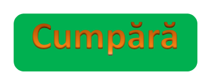

Beatbuddy este un joc de acţiune muzical 2D pentru dispozitive mobile, PC şi console, care spune aventura funky a belet-ectului eteric. Simfonia sa muzicală are probleme şi are nevoie de ajutorul tău împotriva armatelor prinţului Maestro lacom. Beatbuddy: Tale of the Guardians este un joc de aventuri de acţiune dezvoltat de Threaks for PC, Mac şi Linux, lansat pe 6 august 2013. Beatbuddy interacţioneaza cu un mediu viu de respiraţie care impulsioneaza şi se mişca cu coloana sonora, aceste interacţiuni deschizând noi căi pentru a explora şi a ajută la rezolvarea puzzle-urilor.
Preţ : 18,11 €